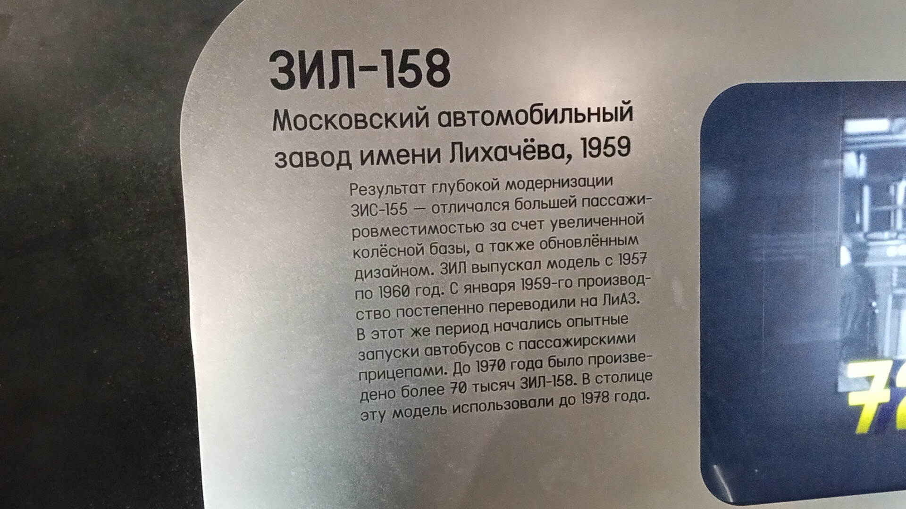
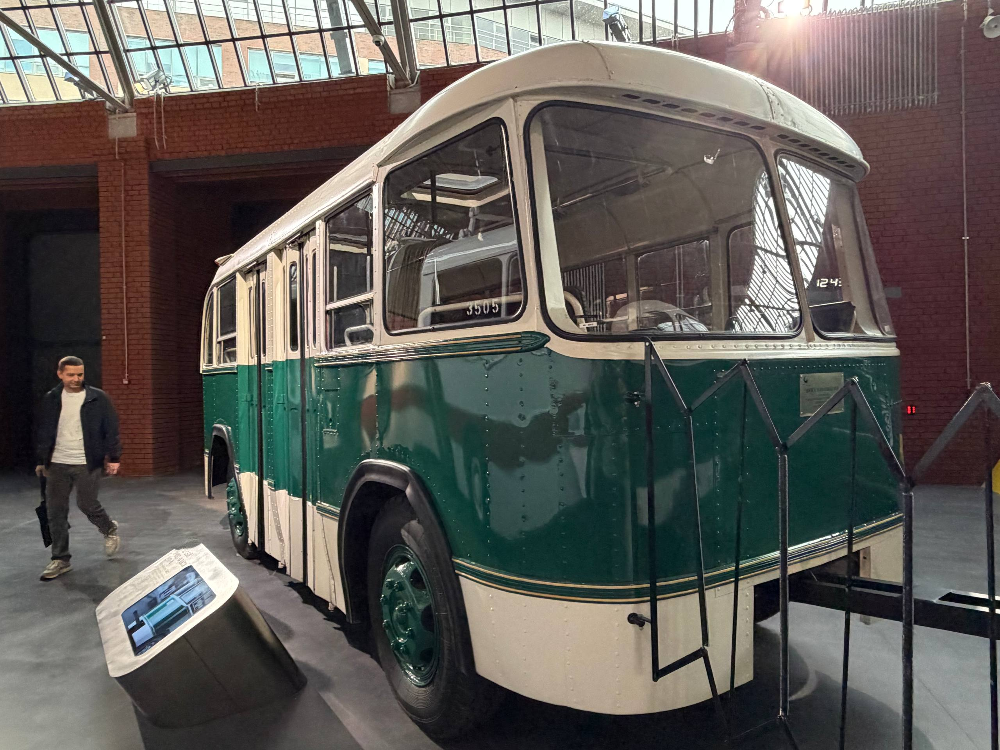
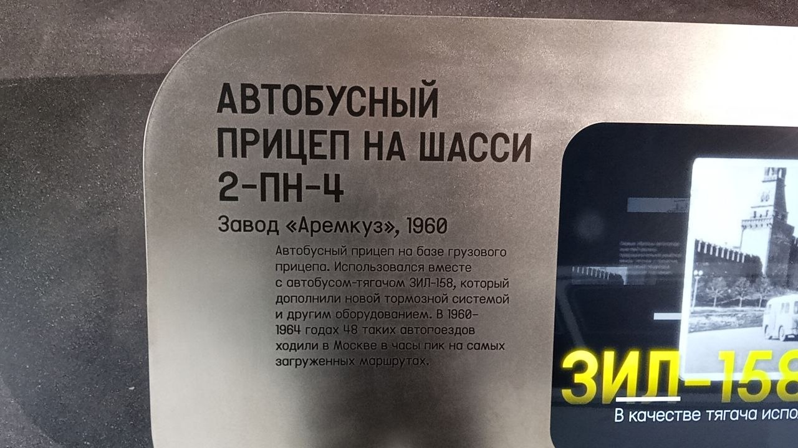
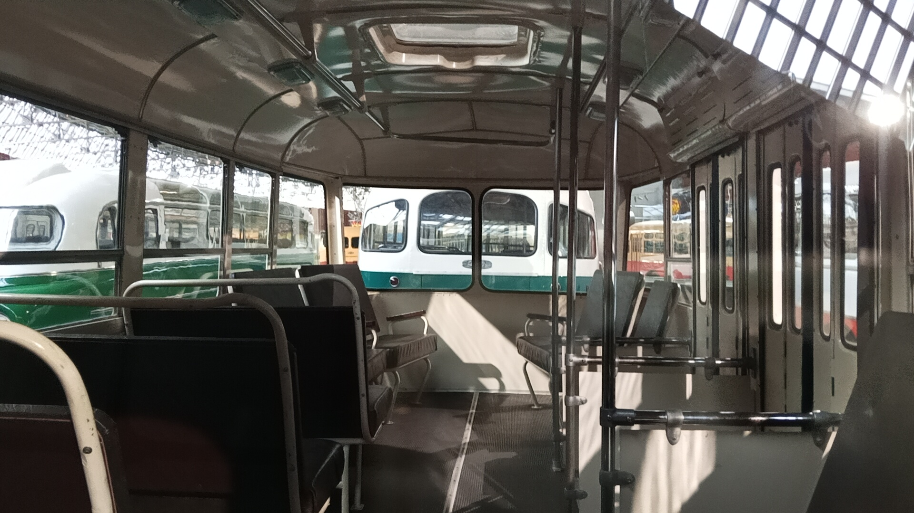

ЗИЛ-158 № 007 и Аремкуз-2ПН4 № 350
Перед вами музейный экспонат — городской высокопольный автобус ЗИЛ-158, выпущенный Московским автомобильным заводом имени Лихачёва в 1959 году, а также пассажирский прицеп Аремкуз-2ПН4 № 350 (завод «Аремкуз», 1960 год).
ЗИЛ-158 стал результатом глубокой модернизации предшественника (ЗИС-155). Он отличался большей пассажировместимостью за счёт увеличенной колёсной базы, а также обновлённым дизайном. Это последняя модель автобуса, выпускавшаяся на ЗИЛе. В 1960–1964 годах 48 таких автопоездов ходили в Москве в часы пик на самых загруженных маршрутах.
Общая информация
| Параметр | Значение |
|---|---|
| Город | Москва 🇷🇺 |
| Транспортная компания | Музей Транспорта Москвы |
| Модель автобуса | ЗИЛ-158 |
| Бортовой № автобуса | 007 |
| Модель прицепа | Аремкуз-2ПН4 |
| № прицепа | 350 |
| Год выпуска прицепа | 1960 |
| Текущее состояние | Памятник / Музейный |
| Год выпуска автобуса | 1959 |
| Завод-изготовитель | Московский автомобильный завод имени Лихачёва (ЗИЛ) |
Технические характеристики автобуса
Основные параметры
Длина: 9,03 м
Ширина: 2,5 м
Высота: 3,0 м
Сухая масса: 5300 кг
Вместимость: 60 человек (32 сидячих)
Конструкция
Компоновка: переднемоторная, заднеприводная
Колёсная база: увеличена по сравнению с ЗИС-155
Остекление: по принципу моделей ЗИЛ-127 и ЗИЛ-129
Внешний вид: повторяет «фестивальную» версию ЗИЛ-158А
История экспоната
Начало выпуска модели
ЗИЛ начал выпускать модель с 1957 года. К Всемирному фестивалю молодёжи и студентов выпустили пилотную серию «фестивальных» ЗИЛ-158А с большими лобовыми стёклами и яркой окраской.
Выпуск автобуса
Именно этот автобус (бортовой № 007) был собран на Московском автомобильном заводе имени Лихачёва в 1959 году.
Передача производства и испытания
Производство автобусов начали постепенно переводить на ЛиАЗ. В этот же период проводились опытные запуски автобусов с пассажирскими прицепами.
Эксплуатация с прицепом
В Москве на самых загруженных маршрутах в часы пик эксплуатировалось 48 автопоездов в составе автобуса ЗИЛ-158 и прицепа Аремкуз-2ПН4.
Конец автобусной программы ЗИЛа
С конвейера ЗИЛа сошёл последний автобус. Дальнейший выпуск полностью перешёл в Ликино-Дулёво под именем ЛиАЗ-158.
Музейный экспонат
Автобус и прицеп были отреставрированы и заняли место в экспозиции Музея Транспорта Москвы.
Фотогалерея

📌 Музей Транспорта Москвы.
Автобус в экспозиции.

📌 Музей Транспорта Москвы.
Информационная табличка автобуса.

📌 Музей Транспорта Москвы.
Автобус ЗИЛ-158 и прицеп Аремкуз-2ПН4.

📌 Музей Транспорта Москвы.
Информационная табличка прицепа.

📌 Музей Транспорта Москвы.
Салон, вид вперед
Нажмите на фото для увеличения
«ЗИЛ-158 представлял собой всего лишь слегка приукрашенный и немного удлинённый вариант автобуса ЗИС-155, разработанного ещё в конце 1940-х годов».